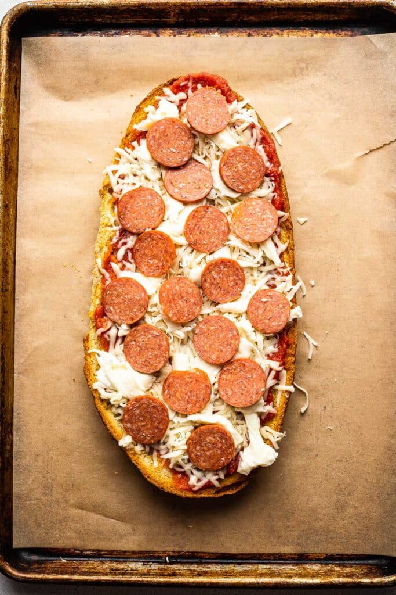

About the food:
The dish we'll be making today is the naan bread pizza. This is a simple yet useful recipe to create a pizza. I like this dish because it is quick to make and doesn't require many ingredients.
Ingredients:
- Naan Bread
- Tomato Sauce
- Shredded Cheddar Cheese
- Pepperoni
- Optional: Additional Toppings
Instructions:
- Lay out a piece of parchment paper on a baking sheet.
- Place a piece of naan bread on the paper.
- Using a spoon spread the tomato sauce on the naan bread.
- Sprinkle the shredded cheese on the sauce, the amount is up to the chef, but I would recommend more rather than less.
- Place pepperoni & your additional toppings on top of the cheese, once again the amount is up to you.
- Optional: Place your additional toppings on the pizza.
- Place the baking sheet with the pizza in the oven at 450°F, and let it cook for 4 to 5 minutes.
- Take it out of the oven and serve!
